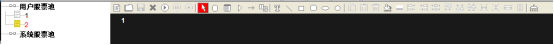
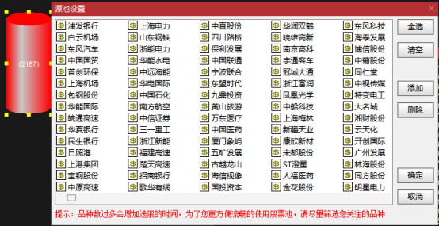
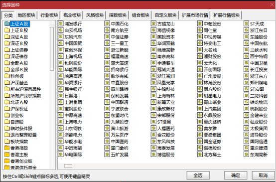
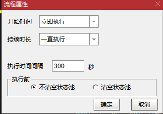
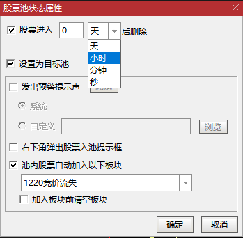
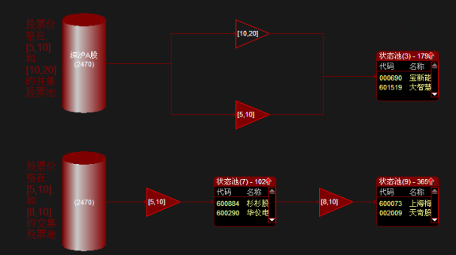
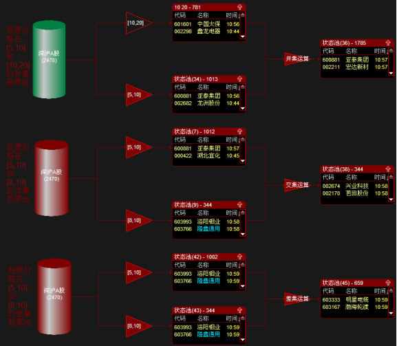

文档记录：
版本 | 时间 | 修改者 | 描述 |
1.0 | 2023-2-16 | 杨银波 |
|
|
|
|
|
|
|
|
|
|
|
|
|
|
|
|
|
●将鼠标移动到操作菜单栏的具体某个操作图标，就会显示此图标的功能关键字。
●运行中的股票池不可以更改其图元。
●双击各图形元素可以对各图形单元进行属性设置或修改。
●对齐操作的标准：和最后一个选的保持一致，以ctrl最后选的那个为参照物
●点击“执行顺序”可以点击流程线改变执行顺序
●查看池子股票是否满足设定条件时一定注意以进入价来计算而不是最新价
●想让股票池根据即时行情更新快些就双击状态池设置状态池属性N秒清除一次
●文字添加菜单，添加了文字直接按住黄色拖动就可以扩大文本框内容
●最多支持同时运行9个股票池
●支持ctrl+c，ctrl+v复制图元
●收益=（现价-进入价）/进入价*100

下方介绍顺序同上保持一致
图标功能关键字 | 功能说明 |
新建 | 新建一个股票池 |
打开 | 打开股票池文件XML文件，可以直接展示这个xml文件所有元素 |
保存 | 保存修改过的股票池文件 |
删除 | 删除当前股票池文件 |
图标功能关键字 | 功能说明 |
运行 | 运行当前股票池 |
暂停 | 暂停当前运行的股票池的运算 |
停止 | 停止股票池的运行 |
图标功能关键字 | 功能说明 |
选择 | 可以选择已画的任何图元 |
备选池 | 添加到选股范围到备选池中作为条件运算的源股票池 |
状态池 | 可以显示股票代码、股票名称、股票进入股票池时间、股票进入股票池价格、股票的最新价、股票的涨幅、股票当天成交总手等信息的目的股票池 |
转移条件 | 设置源股票池的筛选条件 |
流程线 | 连接股票池和转移条件 |
执行顺序 | 点击可以查看股票池运行过程中各条件的计算顺序 |
图标功能关键字 | 功能说明 |
文字 | 在股票池窗口中添加文字内容 |
直线 | 画直线 |
矩形 | 支持shift正方形 |
圆角矩形 | 画圆角矩形区域 |
椭圆 | 支持shift正圆 |
圆 | 画圆区域 |
图标功能关键字 | 功能说明 |
丢弃图元 | 删除当前被选择的图形元素（可以选中直接delete删除） |
颜色 | 给当前的图元填充色彩 |
空心 | 去除图元的中间颜色，只留边框 |
图标功能关键字 | 功能说明 |
左对齐 | 所有选中图元同最后选择的那个图形保持左边对齐 |
右对齐 | 所有选中图元同最后选择的那个图形保持右边对齐 |
水平中对齐 | 所有选中图元同最后选择的那个图形保持垂直中线对齐 |
上对齐 | 所有选中图元同最后选择的那个图形保持上边对齐 |
下对齐 | 所有选中图元同最后选择的那个图形保持下边对齐 |
中对齐 | 所有选中图元同最后选择的那个图形保持水平中线对齐 |
水平等间距 | 三者以上的图元之间保持水平方向间距相等 |
垂直等间距 | 三者以上的图元之间保持垂直方向间距相等 |
等宽 | 所有选中图元同最后选择的那个图形保持水平方向等宽度 |
等高 | 所有选中图元同最后选择的那个图形保持垂直方向等高度 |
属性：设置备选池股票范围

点击添加：全选或者Ctrl、Shift多选添加备选池源股票

文字说明：例如设置备选池的文字显示“沪深A股”。
设置之后的备选池：显示文字说明和源股票的个数。
需要修改备选池范围，右键选择更改属性即可。
运行中的备选池，鼠标放在备选池上可以显示备选池基本信息，如备选池中的股票个数。

属性：设置什么时间开始执行股票池、是一直执行还是执行指定时间段还是只执行一次。执行间隔对一致执行和执行指定时间段有效。并且设置每次执行一次新的计算的时候是不是清除后面的状态池上次选出来的股票信息。（有时候因为一计算就又加进入了，看不到清除状态的过程但是可以观察进入股票池的时间列发现时间会变化的）
线条宽度：设置流程线的线条宽度。
属性：设置条件，类似综合选股条件设置。
文字说明：可以填入文字说明，可以是帮助记忆条件设置的关键词。
停止运算：以后运行股票池中停止对此条件进行运算筛选。
运行中的条件转移，鼠标放在条件转移上可以查看设置的条件信息。
放在状态池边缘的右键操作有：
属性、修改说明文字、手工添加股票到本状态、清除状态中所有股票、加入到板块股。
放在状态池中的某只股票行的右键操作有：
属性、修改说明文字、加入到自选股、查看******走势、从状态池中删除******、手工添加股票到本状态、清除状态中所有股票、加入到板块股。
运行中的状态池可以右键将状态池中的股票添加到自定义板块中、双击股票行进入此股票的个股界面。同时通过右上角的红色向上箭头和绿色向下箭头对状态池进行放大或缩小。
状态池属性设置：
设置状态池种股票被清空时间。可以是N天、小时、分钟、秒。
设置运行过程中双击股票池中的个股，进入个股的分时图界面还是分时界面。
设置此状态池是否为目标池。

目标池是一种特殊的状态池，对于设定为目标池的状态池可以设置在有股票进入时进行预警或者弹出框提示的设置。
可以设置发出预警声音也可以设置右下角弹出入池提示框（入池框弹出20秒后自动消失）
非运行中点击执行顺序，可以查看股票池的整个运算执行顺序。
修改运算顺序，当出现运行顺序数字1、2…..时，点击有数字标注的流程线，点击的第一次的流程线就是第一个计算，第N次被选中的流程线的执行就是第N个。从而保证每次运行之前自己设定股票池计算顺序，保证结果与自己预想的最接近，更准确。


参照上图
1785<781+1013
并集的池子(36)数不完全等于状态池(10 20)和状态池(34)的股票总数是因为状态池(10 20)和状态池(34)中有重复的股票。即使表面上看起来股价分别[5,10],[10,20]的两个不可能有交集的池子，也可能因为池子1 池子2计算的时间差导致有些股价在10左右的股票即进了池子1也进了池子2。
打开修改后的xml，就可以完好的引用别人的股票池了，点击保存。（导入对方公式后获得对方公式在自己系统中的索引ID，填入到股票池名.xml文件）
1 / 9